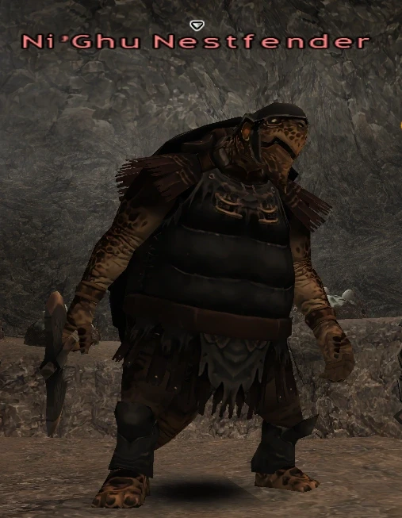

Level 75 reference · Zenith rules
|
Job: Paladin Notorious Monster |
 Image source |


|
Zone |
Level |
Drops |
Steal |
Spawns |
Notes |
|
58 |
1 |
A, L, H | |||
|
HP = Detects Low HP; M = Detects Magic; Sc = Follows by Scent; T(S) = True-sight; T(H) = True-hearing JA = Detects job abilities; WS = Detects weaponskills; Z(D) = Asleep in Daytime; Z(N) = Asleep at Nighttime | |||||

Notes:
- Spawned by Quest: The Talekeeper's Truth
- Spawns by examining the ??? at (G-10).
- Special Attacks: Invincible
Adapted from Eden Wiki: Ni'Ghu Nestfender · Contributors and history · CC BY-SA 4.0. Revision 46934. Layout, links and optional background text adapted for Zenith.